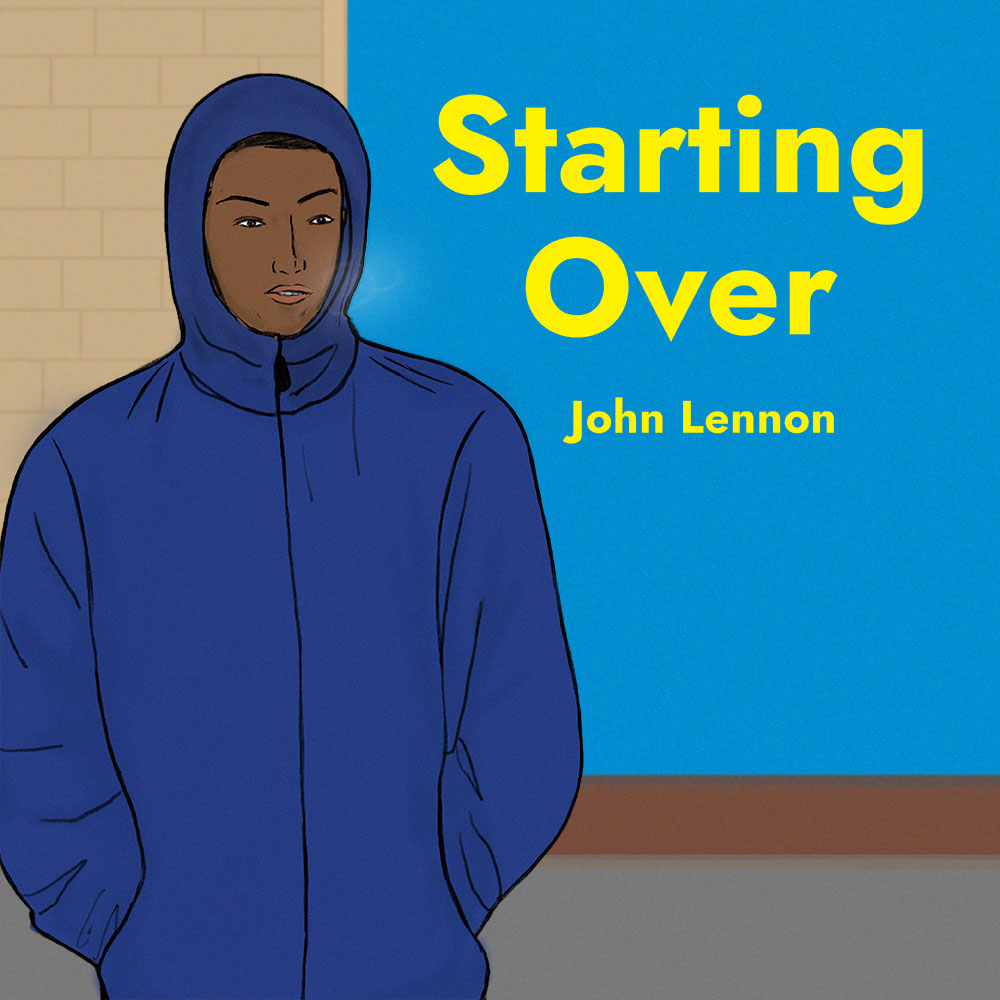

2025 Calendar - Songs & Scenes 2025 Calendar
2025년의 시간을 팝니다.
Songs & Scenes
2025년의 시간을 팝니다.
2025년의 시간을 팝니다.
월별 어울리는 음악을 선정하고 장면을 그렸어요. 여러분의 월별 플레이리스트는 어떤가요?
월별 어울리는 음악을 선정하고 장면을 그렸어요.
여러분의 월별 플레이리스트는 어떤가요?
월별 어울리는 음악을 선정하고 장면을 그렸어요.
여러분의 월별 플레이리스트는 어떤가요?
OFF
음악 영상(유튜브)를 자동재생하려면 버튼을 선택하세요
